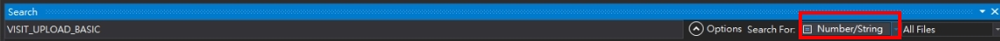
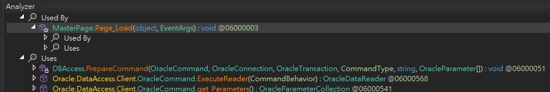

Oracle 連線未釋放 & 無原始碼情況下用 dnSpy 反向處理
最近透過 TOAD for Oracle 的 Session Browser 觀察資料庫連線時，發現某台網站主機長期保留大量 Oracle 連線，長時間處於 INACTIVE 狀態，未自動釋放，導致連線數接近上限，這是一個極為異常的情況。
據了解，這台主機的網站服務多次出現異常，經常由公司監控系統通知該網站服務掛掉，但始終找不出具體原因。推測，這些未釋放的資料庫連線很可能是造成網站不穩的主因之一。判斷可能是該系統未正確操作資料庫，導致連線未釋放。詢問前輩後得知，該系統為 C# Web Form 架構，且僅保留已編譯的 DLL，無原始碼可參考，這讓後續處理變得更加困難。
逆向分析：使用 dnSpy 檢查程式行為
因無法取得原始碼，決定使用 dnSpy 進行反編譯分析。該工具可檢視與編輯 .NET 程式的 C# 程式碼，非常適合逆向追查。
dnSpy 操作步驟
將整個 bin 資料夾中的 DLL 全部拖曳進 dnSpy。
根據 TOAD Session Browser 中觀察到的 SQL 語法，在 dnSpy 中使用「全局搜尋」（Ctrl + Shift + K）功能，輸入關鍵字並選擇「字串」作為搜尋型態，快速定位可疑程式區塊。

找到相關方法或類別後，可透過右鍵點擊選擇「分析」（Analyze），查看呼叫與被呼叫的關聯，快速找出有哪些地方使用了可能有問題的方法。

修改有問題的呼叫 DB 操作程式碼後存檔，將 DLL 儲存並重新部署回目標環境。
結語
隨後再次觀察 TOAD for Oracle 的 Session Browser，確認已無異常連線長時間卡住的情況，問題獲得改善，監控系統也未再發出此異常通知。
這次經驗再次提醒我：資料庫連線的管理直接影響系統穩定性。即使程式功能正確，只要資源未妥善釋放，就可能在高併發或長時間運行下造成服務中斷。同時也凸顯了原始碼保存和交接的重要性。在這次事件中，當缺乏原始碼時，只能透過 dnSpy 進行反向追查。雖然最後成功找出問題，但這樣的方式無法取代正常維運流程，風險與成本都高得多。